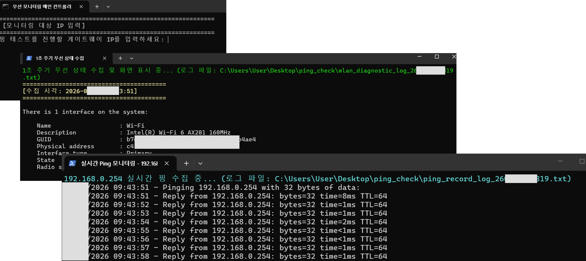
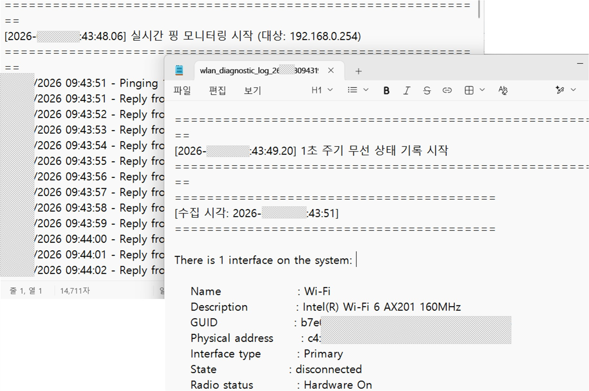

다음 링크에서 윈도우용 스크립트 파일 다운로드(bat파일 또는 zip파일):
☞ 참고: 파일을 바탕화면에 다운로드후 .bat 파일 실행 또는 .zip 파일 압축 해제 후 .bat 파일 실행.
다음 링크에서 윈도우용 스크립트 파일 다운로드(bat파일 또는 zip파일):
☞ 참고: 파일을 바탕화면에 다운로드후 .bat 파일 실행 또는 .zip 파일 압축 해제 후 .bat 파일 실행.
☞ 참고: ping 체크시 체크할 IP 입력
☞ 참고: ping 체크시 로그파일도 저장되며, 체크완료후 열린 창을 닫음

